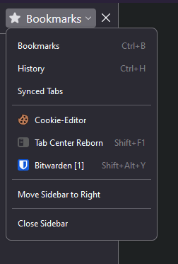

Introduction
Here's how to get the Bitwarden firefox extension to appear as an application on your PinePhone Pro. Make sure your display scaling is set to 100% for this guide
I'm doing this on PMOS Phosh
Install Bitwarden
Install the extension then press "C-b" to open the sidebar. Use the dropdown button to switch from the bookmarks view to Bitwarden. This is a workaround to the Bitwarden pop-up window being glitchy.

Getting the extension ID
Navigate to about:debugging#/runtime/this-firefox
Scroll down until you see the extension ID and copy it to a text file. We'll need it later.
Creating the .desktop file
This is the meat of it all. Create the following desktop file and paste in these contente
~/.local/share/applications/bitwarden.desktop
[Desktop Entry]
Name=Bitwarden
Comment=Manage your passwords
Exec=firefox-esr --new-window "moz-extension://YOUR_EXTENSION_ID/popup/index.html"
Terminal=false
Type=Application
Icon=/home/user/.local/share/applications/images/bitwarden.png
Categories=Network;WebBrowser;
StartupWMClass=Firefox-esrBitwarden should now be added to your desktop. If you don't see it pop up, make sure the firefox-esr application exists and is in your path. If the .desktop file cant find the program in the path it gets ignored.
My permissions for the file is 0644